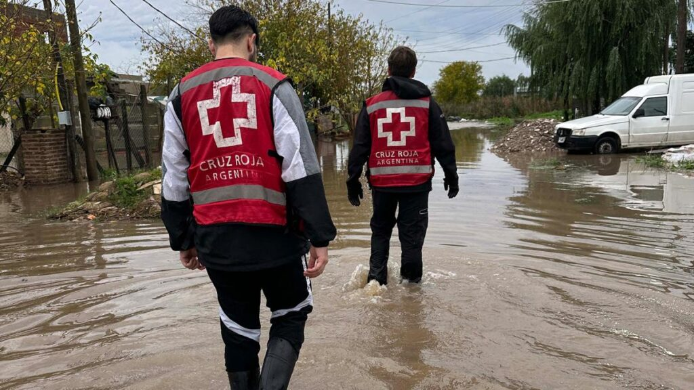
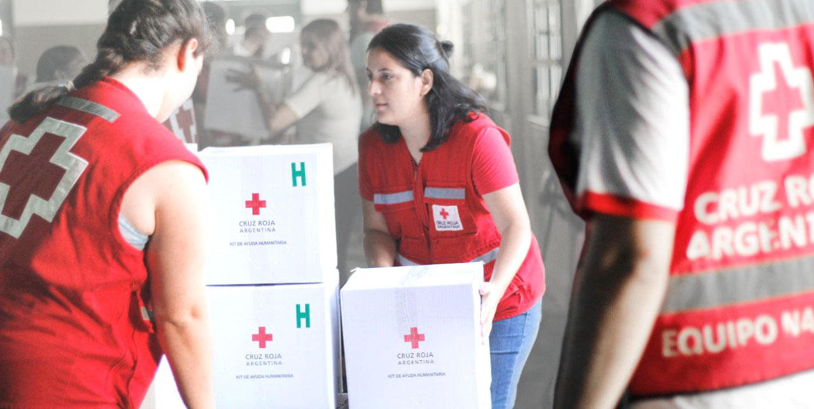
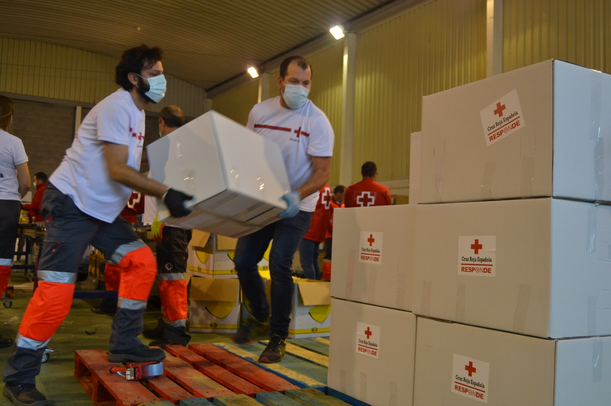

Cruz Roja es una organización humanitaria internacional dedicada a prevenir y aliviar el sufrimiento humano. Brinda asistencia en situaciones de emergencia, desastres naturales, conflictos y crisis sanitarias, promoviendo además la salud, la solidaridad y el respeto por la dignidad de todas las personas.

Personal de la Cruz Roja ayudando a la comunidad en una situación de emergencia.
Más de un siglo de ayuda humanitaria
Desde su llegada a Argentina, la Cruz Roja ha participado en la atención de miles de personas afectadas por emergencias, desastres naturales y crisis sanitarias. Gracias al trabajo de sus voluntarios y al apoyo de la comunidad, la organización continúa desarrollando acciones de asistencia, capacitación en primeros auxilios y promoción de la salud en todo el país.
Donaciones que generan impacto
Además de brindar asistencia en emergencias, la Cruz Roja recibe donaciones de personas, empresas e instituciones que permiten financiar sus programas humanitarios. Estas contribuciones ayudan a adquirir alimentos, medicamentos, agua potable, elementos de primeros auxilios y otros recursos esenciales para asistir a las comunidades afectadas por desastres y situaciones de vulnerabilidad.

Las donaciones permiten brindar ayuda a miles de personas en situaciones de emergencia.
Alianzas con empresas y organizaciones
La Cruz Roja trabaja junto a empresas, instituciones y organizaciones de distintos sectores para fortalecer su labor humanitaria. Estas alianzas permiten reunir recursos, desarrollar programas de ayuda, brindar capacitación y responder de manera más rápida y eficiente ante emergencias y desastres.

Personal de la Cruz Roja movilizando ayuda humanitaria para su distribución.